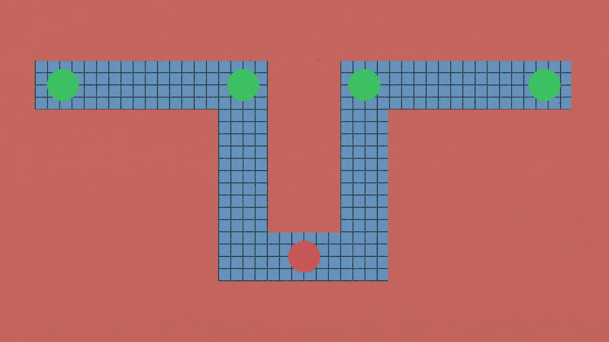
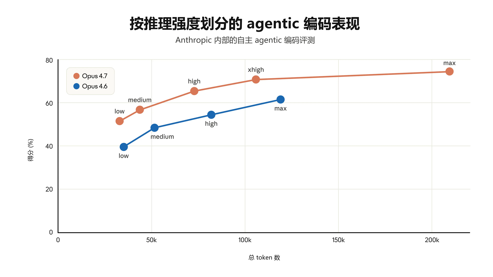
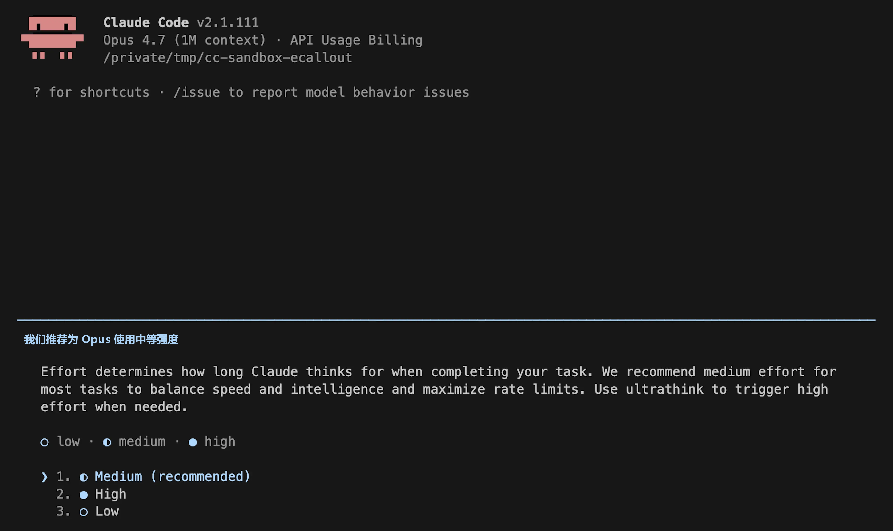
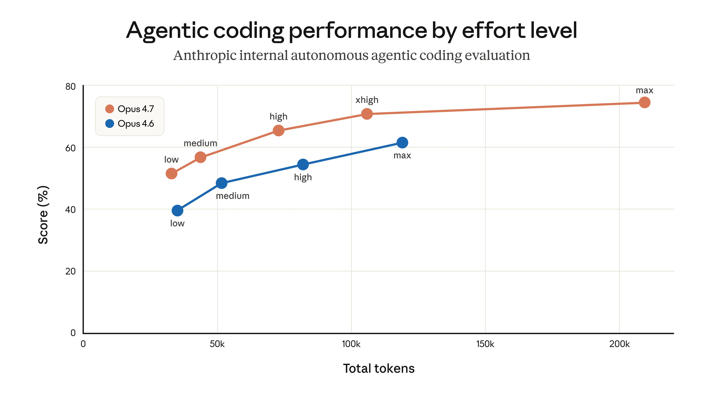
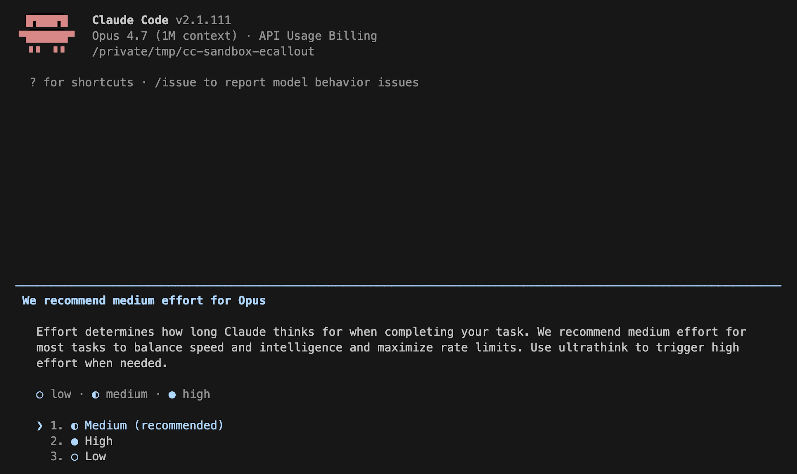
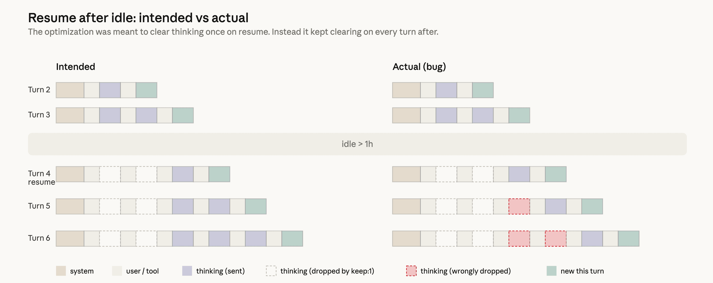

关于近期 Claude Code 质量报告的更新
📖 中文摘要
专业术语注解
推理强度（effort）：控制模型思考时长与延迟、使用额度之间权衡的档位参数提示词缓存：缓存重复输入token以降低费用与延迟的机制上下文工程：决定上下文窗口中保留、裁剪或清除哪些内容的管理方式消融实验：逐行移除系统提示词中的指令，以测量每一行的实际影响渐进式发布：先小范围放量、观察指标后再全量上线的发布方式📄 中文全文
- 类别： 工程（Engineering）
- 来源： https://www.anthropic.com/research/april-23-postmortem
工程（Engineering） 2026 年 4 月 23 日

已发布 2026 年 4 月 23 日 团队 工程 主题相关文章 * 科学 2026 年 3 月 23 日 用于科学计算的长时运行 Claude
阅读更多
过去一个月里，我们一直在调查有关 Claude 对部分用户的回复质量下降的报告。我们已把这些报告追溯到三项彼此独立的变更，它们分别影响了 Claude Code、Claude Agent SDK 和 Claude Cowork。API 未受影响。
截至 4 月 20 日（v2.1.116），这三个问题现已全部解决。
在这篇文章中，我们会说明我们发现了什么、修复了什么，以及我们将做出哪些不同的做法，以确保类似问题再次发生的可能性大大降低。
我们非常认真地对待有关性能退化的报告。我们绝不会有意降低模型质量，并且能够立即确认我们的 API 与推理层未受影响。
经过调查，我们发现了三个不同的问题：
1. 3 月 4 日，我们把 Claude Code 的默认推理强度从 high 改为 medium，以减少部分用户在 high 模式下遇到的极长延迟——长到足以让界面看起来卡死。这是一个错误的权衡。在用户告诉我们，他们更希望默认采用更高的智能水平、并针对简单任务自行选择更低强度之后，我们于 4 月 7 日回滚了这项改动。这影响了 Sonnet 4.6 和 Opus 4.6。
2. 3 月 26 日，我们上线了一项改动，清除已空闲超过一小时的会话中 Claude 较早的思考内容，以降低用户恢复这些会话时的延迟。一个缺陷导致这一清除在该会话余下的每一轮里反复发生，而不只是执行一次，使 Claude 显得健忘、重复。我们在 4 月 10 日修复了它。这影响了 Sonnet 4.6 和 Opus 4.6。
3. 4 月 16 日，我们新增了一条系统提示词指令，以降低冗余输出。它与其他提示词改动叠加后损害了编码质量，并于 4 月 20 日被回滚。这影响了 Sonnet 4.6、Opus 4.6 和 Opus 4.7。
由于每项变更在不同时间、作用于不同的一部分流量，叠加起来看上去就像是广泛而不一致的性能退化。虽然我们在 3 月初就开始调查这些报告，但起初很难把它们与用户反馈中的正常波动区分开来，而且我们内部的使用情况和评测最初也都没能复现所发现的问题。 这不是用户应当从 Claude Code 获得的体验。截至 4 月 23 日，我们正在为所有订阅用户重置使用额度。
Claude Code 默认推理强度的改动
2 月我们在 Claude Code 中发布 Opus 4.6 时，把默认推理强度设为 high。
不久之后，我们收到用户反馈：Claude Opus 4.6 在高强度模式下偶尔会思考过久，导致界面看起来卡死，并给这些用户带来不成比例的延迟与 token 用量。
一般而言，模型思考得越久，输出就越好。强度级别是 Claude Code 让用户设定这一权衡的方式——更多的思考，对应更低的延迟与更少触及使用额度。在为模型校准强度级别时，我们会把这一权衡纳入考量，以便在测试时计算（test-time-compute）曲线上挑选出能为用户带来最佳选项范围的点。随后在产品层，我们选定把曲线上的哪个点设为默认值，这个值就是我们作为 effort 参数发送给 Messages API 的数值；我们再通过 /effort 提供其他选项。

在我们的内部评测与测试中，对大多数任务而言，中等强度在智能水平上略低，但延迟显著更小。它也不存在思考偶尔出现极长尾延迟的问题，并且有助于让用户的使用额度发挥到最大。因此，我们推出了一项改动，把 medium 设为默认强度，并通过产品内弹窗说明了理由。
推出后不久，用户开始反映 Claude Code 感觉没那么聪明了。我们上线了多次设计迭代，让当前的强度设置更清晰，以提醒用户可以更改默认值（启动时提示、内嵌的强度选择器，以及重新带回 ultrathink），但大多数用户仍保留了 medium 强度默认值。 在听取更多客户的反馈后，我们于 4 月 7 日撤销了这一决定。现在，对于 Opus 4.7，所有用户默认使用xhigh 强度；对于其他所有模型，默认使用 high 强度。
一项丢失了先前推理内容的缓存优化
当 Claude 对一项任务进行推理时，这些推理通常保留在对话历史里，以便在随后的每一轮中，Claude 都能看到自己当初为何做出那些编辑与工具调用。
3 月 26 日，我们上线了本意是提升这一特性效率的改动。我们使用提示词缓存，让用户的连续 API 调用更便宜、更快速。Claude 在发起 API 请求时会把输入 token 写入缓存，一段时间不活动后，该提示词便从缓存中逐出，为其他提示词腾出空间。缓存利用率是我们谨慎管理的事项，关于我们的做法另有更多说明。
这个设计本应很简单：如果一个会话已空闲超过一小时，我们可以通过清除旧的思考片段，降低用户恢复该会话的成本。既然该请求本来就会缓存未命中，我们可以从请求中裁去不必要的消息，减少发送给 API 的未缓存 token 数量。之后再恢复发送完整的推理历史。为此，我们使用了 clear_thinking_20251015 API 头，并配合 keep:1。
实现里有一个缺陷。它没有只清除一次思考历史，而是在该会话余下的每一轮里都清除。会话一旦越过空闲阈值，该进程此后发出的每个请求都会告诉 API 只保留最近的一段推理，丢弃它之前的全部内容。这还会层层叠加：如果你在 Claude 正进行工具调用的中途发了一条后续消息，那会在有缺陷的标记下开启新一轮，于是连当前这一轮的推理也被丢弃了。Claude 会继续执行，却越来越记不清自己当初为何选择那样做。这就表现为人们所报告的健忘、重复与奇怪的工具选择。
由于这会不断从后续请求中丢弃思考块，那些请求也因此造成缓存未命中。我们认为，正是这一点导致了另一类报告：使用额度消耗得比预期更快。
 两项不相关的实验让我们起初难以复现该问题：一项是仅限内部、与消息队列有关的服务端实验；另一项是我们展示思考内容方式上的一项正交改动，在大多数 CLI 会话里掩盖了这个缺陷，因此即便测试外部构建，我们也没有发现它。
这个缺陷处在 Claude Code 的上下文管理、Anthropic API 与扩展思考的交汇处。它引入的改动通过了多轮人工与自动代码审查，也通过了单元测试、端到端测试、自动验证和内部试用。再加上它只出现在一种边缘情形（过期会话）中、且难以复现，我们花了一周多才找出并确认根本原因。
作为调查的一部分，我们用 Opus 4.7 对引发问题的拉取请求回溯测试了 Code Review。在获得收集完整上下文所需的代码仓库后，Opus 4.7 找到了这个缺陷，而 Opus 4.6 没有。为防止此类情况再次发生，我们正在落地对额外仓库的支持，把它们作为代码审查的上下文。
我们在 4 月 10 日的 v2.1.101 中修复了这个缺陷。
两项不相关的实验让我们起初难以复现该问题：一项是仅限内部、与消息队列有关的服务端实验；另一项是我们展示思考内容方式上的一项正交改动，在大多数 CLI 会话里掩盖了这个缺陷，因此即便测试外部构建，我们也没有发现它。
这个缺陷处在 Claude Code 的上下文管理、Anthropic API 与扩展思考的交汇处。它引入的改动通过了多轮人工与自动代码审查，也通过了单元测试、端到端测试、自动验证和内部试用。再加上它只出现在一种边缘情形（过期会话）中、且难以复现，我们花了一周多才找出并确认根本原因。
作为调查的一部分，我们用 Opus 4.7 对引发问题的拉取请求回溯测试了 Code Review。在获得收集完整上下文所需的代码仓库后，Opus 4.7 找到了这个缺陷，而 Opus 4.6 没有。为防止此类情况再次发生，我们正在落地对额外仓库的支持，把它们作为代码审查的上下文。
我们在 4 月 10 日的 v2.1.101 中修复了这个缺陷。
一项降低冗余度的系统提示词改动
我们最新的模型 Claude Opus 4.7 相对于前代有一个显著的行为特点：正如我们在发布时撰文所述，它往往相当啰嗦。这让它在难题上更聪明，但也会产生更多输出 token。 在发布 Opus 4.7 的几周前，我们就开始为它调整 Claude Code。每个模型的行为都略有不同，每次发布前我们都会花时间针对它优化脚手架与产品。 我们有多种降低冗余度的手段：模型训练、提示词，以及改进产品中的思考体验。最终这些方法我们都用了，但系统提示词中的一处新增内容，对 Claude Code 的智能水平产生了格外大的影响：
"Length limits: keep text between tool calls to ≤25 words. Keep final responses to ≤100 words unless the task requires more detail." 经过数周的内部测试，且我们运行的那一套评测中没有出现回退，我们对这项改动很有信心，并于 4 月 16 日随 Opus 4.7 一同发布。 作为此次调查的一部分，我们用更广泛的一组评测做了更多消融实验（从系统提示词中逐行移除，以理解每一行的影响）。其中一项评测显示，Opus 4.6 与 Opus 4.7 都下降了 3%。我们在 4 月 20 日的发布中立即回滚了该提示词。
后续改进
为避免这些问题，我们将在几个方面改变做法：确保更大比例的内部员工使用 Claude Code 的正式公开构建（而非我们用来测试新功能的版本）；并改进我们内部使用的 Code Review 工具，把改进后的版本交付给客户。
我们也在对系统提示词改动加上更严格的管控。对 Claude Code 的每一次系统提示词改动，我们都将运行一整套针对各模型的评测，持续做消融以理解每一行的影响，并且已经构建了新工具，让提示词改动更易于审查与审计。我们还在 CLAUDE.md 中加入了指引，确保针对特定模型的改动只作用于它们所面向的那个模型。对于任何可能与智能水平形成权衡的改动，我们会加入静置期、更广泛的评测套件和渐进式发布，以便更早发现问题。
我们近期在 X 上创建了 @ClaudeDevs，以便有空间深入解释产品决策及其背后的考量。我们也会在 GitHub 上的集中帖子里同步这些更新。
最后，我们要感谢用户：正是那些使用 /feedback 命令向我们反馈问题的人（或者在网上贴出具体、可复现示例的人），最终让我们得以定位并修复这些问题。今天，我们正在为所有订阅用户重置使用额度。
我们非常感谢你的反馈，也感谢你的耐心。
▸ 英文原文（点击展开）
An update on recent Claude Code quality reports
- Date: 2026-04-23
- Source: https://www.anthropic.com/research/april-23-postmortem
An update on recent Claude Code quality reports
Published Apr 23, 2026 Team Engineering Topics
Related articles * Science Mar 23, 2026 Long-running Claude for scientific computing
View more
Over the past month, we’ve been looking into reports that Claude’s responses have worsened for some users. We’ve traced these reports to three separate changes that affected Claude Code, the Claude Agent SDK, and Claude Cowork. The API was not impacted.
All three issues have now been resolved as of April 20 (v2.1.116).
In this post, we explain what we found, what we fixed, and what we’ll do differently to ensure similar issues are much less likely to happen again.
We take reports about degradation very seriously. We never intentionally degrade our models, and we were able to immediately confirm that our API and inference layer were unaffected.
After investigation, we identified three different issues:
1. On March 4, we changed Claude Code's default reasoning effort from high to medium to reduce the very long latency—enough to make the UI appear frozen—some users were seeing in high mode. This was the wrong tradeoff. We reverted this change on April 7 after users told us they'd prefer to default to higher intelligence and opt into lower effort for simple tasks. This impacted Sonnet 4.6 and Opus 4.6.
2. On March 26, we shipped a change to clear Claude's older thinking from sessions that had been idle for over an hour, to reduce latency when users resumed those sessions. A bug caused this to keep happening every turn for the rest of the session instead of just once, which made Claude seem forgetful and repetitive. We fixed it on April 10. This affected Sonnet 4.6 and Opus 4.6.
3. On April 16, we added a system prompt instruction to reduce verbosity. In combination with other prompt changes, it hurt coding quality and was reverted on April 20. This impacted Sonnet 4.6, Opus 4.6, and Opus 4.7.
Because each change affected a different slice of traffic on a different schedule, the aggregate effect looked like broad, inconsistent degradation. While we began investigating reports in early March, they were challenging to distinguish from normal variation in user feedback at first, and neither our internal usage nor evals initially reproduced the issues identified. This isn’t the experience users should expect from Claude Code. As of April 23, we’re resetting usage limits for all subscribers.
A change to Claude Code's default reasoning effort
When we released Opus 4.6 in Claude Code in February, we set the default reasoning effort to high.
Soon after, we received user feedback that Claude Opus 4.6 in high effort mode would occasionally think for too long, causing the UI to appear frozen and leading to disproportionate latency and token usage for those users.
In general, the longer the model thinks, the better the output. Effort levels are how Claude Code lets users set that tradeoff—more thinking versus lower latency and fewer usage limit hits. As we calibrate effort levels for our models, we take this tradeoff into account in order to pick points along the test-time-compute curve that give people the best range of options. In the product layer, we then choose which point along this curve we set as our default, and that is the value we send to the Messages API as the effort parameter; we then make the other options available via /effort.

In our internal evals and testing, medium effort achieved slightly lower intelligence with significantly less latency for the majority of tasks. It also didn’t suffer from the same issues with occasional very long tail latencies for thinking, and it helped maximize users’ usage limits. As a result, we rolled out a change making medium the default effort, and explained the rationale via in-product dialog.
Soon after rolling out, users began reporting that Claude Code felt less intelligent. We shipped a number of design iterations to make the current effort setting clearer in order to alert people they could change the default (notices on startup, an inline effort selector, and bringing back ultrathink), but most users retained the medium effort default. After hearing feedback from more customers, we reversed this decision on April 7. All users now default toxhigh effort for Opus 4.7, and high effort for all other models.
A caching optimization that dropped prior reasoning
When Claude reasons through a task, that reasoning is normally kept in the conversation history so that on every subsequent turn, Claude can see why it made the edits and tool calls it did.
On March 26, we shipped what was meant to be an efficiency improvement to this feature. We use prompt caching to make back-to-back API calls cheaper and faster for users. Claude writes the input tokens to the cache when it makes an API request, then after a period of inactivity the prompt is evicted from cache, making room for other prompts. Cache utilization is something we manage carefully (more on our approach).
The design should have been simple: if a session has been idle for more than an hour, we could reduce users’ cost of resuming that session by clearing old thinking sections. Since the request would be a cache miss anyway, we could prune unnecessary messages from the request to reduce the number of uncached tokens sent to the API. We’d then resume sending full reasoning history. To do this we used the clear_thinking_20251015 API header along with keep:1.
The implementation had a bug. Instead of clearing thinking history once, it cleared it on every turn for the rest of the session. After a session crossed the idle threshold once, each request for the rest of that process told the API to keep only the most recent block of reasoning and discard everything before it. This compounded: if you sent a follow-up message while Claude was in the middle of a tool use, that started a new turn under the broken flag, so even the reasoning from the current turn was dropped. Claude would continue executing, but increasingly without memory of why it had chosen to do what it was doing. This surfaced as the forgetfulness, repetition, and odd tool choices people reported.
Because this would continuously drop thinking blocks from subsequent requests, those requests also resulted in cache misses. We believe this is what drove the separate reports of usage limits draining faster than expected.

Two unrelated experiments made it challenging for us to reproduce the issue at first: an internal-only server-side experiment related to message queuing; and an orthogonal change in how we display thinking suppressed this bug in most CLI sessions, so we didn’t catch it even when testing external builds. This bug was at the intersection of Claude Code’s context management, the Anthropic API, and extended thinking. The changes it introduced made it past multiple human and automated code reviews, as well as unit tests, end-to-end tests, automated verification, and dogfooding. Combined with this only happening in a corner case (stale sessions) and the difficulty of reproducing the issue, it took us over a week to discover and confirm the root cause. As part of the investigation, we back-tested Code Review against the offending pull requests using Opus 4.7. When provided the code repositories necessary to gather complete context, Opus 4.7 found the bug, while Opus 4.6 didn't. To prevent this from happening again, we are now landing support for additional repositories as context for code reviews. We fixed this bug on April 10 in v2.1.101.A system prompt change to reduce verbosity
Our latest model, Claude Opus 4.7, has a notable behavioral quirk relative to its predecessor: as we wrote about at launch, it tends to be quite verbose. This makes it smarter on hard problems, but it also produces more output tokens. A few weeks before we released Opus 4.7, we started tuning Claude Code in preparation. Each model behaves slightly differently, and we spend time before each release optimizing the harness and product for it. We have a number of tools to reduce verbosity: model training, prompting, and improving thinking UX in the product. Ultimately we used all of these, but one addition to the system prompt caused an outsized effect on intelligence in Claude Code:
“Length limits: keep text between tool calls to ≤25 words. Keep final responses to ≤100 words unless the task requires more detail.” After multiple weeks of internal testing and no regressions in the set of evaluations we ran, we felt confident about the change and shipped it alongside Opus 4.7 on April 16. As part of this investigation, we ran more ablations (removing lines from the system prompt to understand the impact of each line) using a broader set of evaluations. One of these evaluations showed a 3% drop for both Opus 4.6 and 4.7. We immediately reverted the prompt as part of the April 20 release.
Going forward
We are going to do several things differently to avoid these issues: we’ll ensure that a larger share of internal staff use the exact public build of Claude Code (as opposed to the version we use to test new features); and we'll make improvements to our Code Review tool that we use internally, and ship this improved version to customers.
We’re also adding tighter controls on system prompt changes. We will run a broad suite of per-model evals for every system prompt change to Claude Code, continuing ablations to understand the impact of each line, and we have built new tooling to make prompt changes easier to review and audit. We've additionally added guidance to our CLAUDE.md to ensure model-specific changes are gated to the specific model they're targeting. For any change that could trade off against intelligence, we'll add soak periods, a broader eval suite, and gradual rollouts so we catch issues earlier.
We recently created @ClaudeDevs on X to give us the room to explain product decisions and the reasoning behind them in depth. We'll share the same updates in centralized threads on GitHub.
Finally, we’d like to thank our users: the people who used the /feedback command to share their issues with us (or who posted specific, reproducible examples online) are the ones who ultimately allowed us to identify and fix these problems. Today we are resetting usage limits for all subscribers.
We’re immensely grateful for your feedback and for your patience.